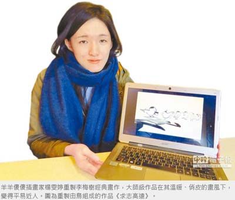
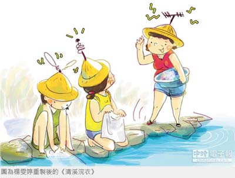

當李梅樹遇上俏皮插畫家
謝幸恩｜中國時報／新北市金馬新聞｜2015年12月6日
李梅樹名畫也走俏皮風？李梅樹紀念館發起「前輩藝術家遇見新世代插畫家」計畫，由2位七年級插畫家「羊羊傻傻」、「喇賽XXOO」重製經典畫作，將李梅樹自然、寫實的大師意境，在年輕人詼諧、俏皮的畫風下，化作一幅幅「零距離」親民派的插畫。
李梅樹紀念館今年10月與2位插畫家合作，每人重製各10幅李梅樹畫作，先以網路瀏覽為主，實際展出仍視後續反應。「喇賽XXOO」為就讀北藝大博士班的陳若瑋，以黑白漫畫呈現李梅樹與導師石川欽一郎、同學李石樵、陳澄波等人的藝壇地位。
畢業於台藝大美術系的楊雯婷，溫暖的畫風、簡單的線條，帶出「羊羊傻傻」的療癒感； 她說，重製困難在於畫面安排、意境重製，以「門外漢」的角度觀察，無須拷貝前輩畫風，帶點不正經的俏皮感來顛覆藝術，讓看過的人牢記其故事。楊雯婷也說，李梅樹畢業於東京藝大，畢業生須創作《自畫像》，方能獲畢業證書，重製時融入其苦惱、生澀神情，頭上站隻鳥握著畢業證書，鳥的意象來自於由鳥組成的作品《求志高遠》，凸顯李梅樹喜愛觀察三峽保育類鳥禽，便賦予其新生命。
李梅樹知名作品《清溪浣衣》，描繪婆媽在三峽溪畔洗衣並交換村里八卦情景；楊雯婷說，如今有智慧型手機、臉書等傳遞訊息，便將婆媽的頭頂畫了接收電波的天線，每個人如同「廣播電台」般互通有無。
楊雯婷也將重製《愛孫》，她說，原畫以3個孫子並排坐呈現「山」型，隱含「我愛孫中山」意涵，重製時將孫子「變臉」為孫中山，李梅樹為國民黨員，愛孫中山如同愛三峽，不以批判政治眼光看待，盼保留作者與土地間的浪漫故事。